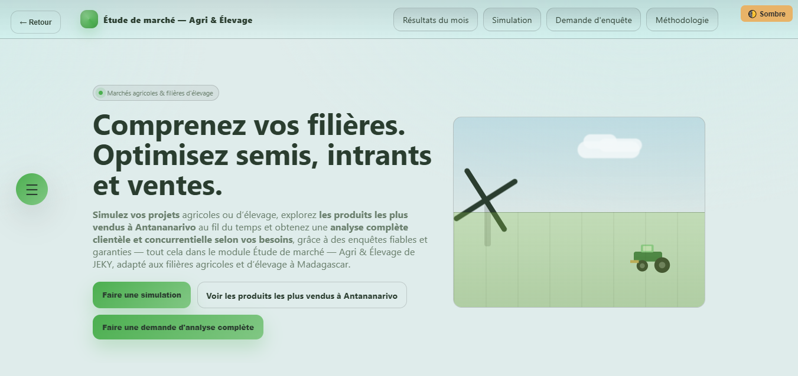
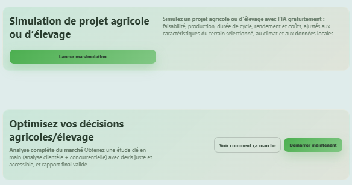
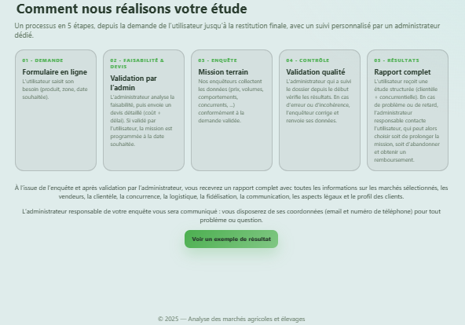

PROJET PHARE • STAGE 2025
JEKY – Système d’aide à la décision
JEKY – Système d’aide à la décision
pour l’étude de marché agricole et d'élevage (web)
Module d’analyse stratégique intégré à la plateforme JEKY pour les porteurs de projets agricoles et d’élevage à Madagascar.
Contexte
Projet réalisé lors de mon stage de 3 mois chez Masàky (Arambato, Antananarivo). Objectif : aider les porteurs de projets agricoles/élevages à prendre des décisions éclairées grâce à des données de marché locales fiables.
Problème
- • Manque d’informations fiables sur les prix et la demande
- • Mauvaise planification agricole et élevage
- • Décisions prises à l’aveugle → pertes de revenus et déforestation
Solution
Développement d’un module complet d’étude de marché intégré à la plateforme JEKY.
Fonctionnalités principales
📊
Simulation de projet agricole
📈
Tableau de bord des produits les plus vendus à Antananarivo
🔍
Analyse de marché localisée
📋
Gestion complète des enquêtes terrain
Captures d’écran du module

Accueil & Dashboard

Simulation intelligente

Analyse marché localisée
Technologies utilisées
Vue.js
Laravel
PostgreSQL
Jira + Scrum
UML + Design Patterns
Méthodologie
- • Analyse via arbres à problèmes / solutions
- • Modélisation UML complète (cas d’utilisation, séquences, classes)
- • Design Patterns (MVC, Builder, Strategy, Observer…)
- • Méthode Agile Scrum avec Jira
Résultats & Impact
- • +30% d’amélioration estimée de la prise de décision
- • -25% de réduction des erreurs de production
- • Soutenance Licence : 18/20